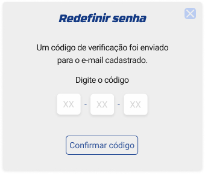
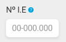
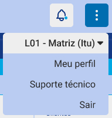
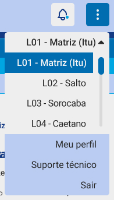

Instrução de Trabalho
{Escreva o Título do Projeto}
| Elaboração | Aprovação | ||||
|---|---|---|---|---|---|
| Nome | Visto | Data | Nome | Visto | Data |
| {Escreva o nome de quem elaborou o projeto} | {Escreva a data do visto de elaboração no formato DD/MM/AAAA} | {Escreva o nome de quem aprovou o projeto} | {Escreva a data do visto de aprovação no formato DD/MM/AAAA} | ||
1. Objetivo
{Escreva o objetivo do projeto.}
2. Referências
{Escreva as referências do projeto.}
3. Definições
{Escreva as definições do projeto.}
4. Procedimentos e Responsabilidades
4.1. Abrir o programa ERPJ
Ao clicar no ícone de atalho presente no desktop, um popup será exibido: esta é a interface inicial de acesso, que é apresentada após a abertura do sistema.

4.2. Tela de login
4.2.1. Inserindo os dados de acesso
O usuário é convidado a interagir com os campos designados para inserir suas credenciais: nome de usuário e senha. Por favor, insira os dados pertinentes em cada campo correspondente.
Nota: as credenciais serão criadas pela equipe de TI e encaminhadas para o vendedor.

4.2.2. Campo de usuário ou senha preenchido incorretamente
Caso o vendedor digite errado uma ou mais informações nos campos, uma mensagem de erro será exibida para que o usuário revise os dados e preencha as informações corretamente.
4.2.3. Redefinindo uma senha
Quando um usuário se depara com a situação de ter esquecido sua senha de acesso, uma alternativa viável se encontra à disposição por meio da opção designada esqueci a senha. Ao optar por essa alternativa, o usuário será redirecionado para uma interface alternativa, a qual possibilitará a redefinição da senha em questão.
4.2.4. Processo de redefinição de senha
É possível realizar a redefinição da senha utilizando o endereço de e-mail registrado no sistema. Ao preencher o campo apropriado com o seu endereço de e-mail e depois clicar no botão solicitar redefinição, um código numérico de seis dígitos será enviado para o e-mail que você forneceu. Esse código é destinado a autorizar a ação subsequente de redefinir a senha.
Após receber o código composto por seis dígitos, é necessário que o usuário os insira no campo apropriado e, em seguida, efetue a confirmação do código ao pressionar o botão confirmar código.
4.2.5. Redefinindo a senha
Após inserir o código, o usuário é encaminhado para a tela de redefinição de senha, onde depara-se com dois campos destinados à definição da nova senha. Estes campos requerem o preenchimento do campo de "nova senha", bem como do campo adicional para "confirmar senha” para confirmar se o usuário inseriu corretamente a senha. Após completar essa etapa, a confirmação e o redirecionamento à tela de login podem ser efetuados pelo usuário mediante o acionamento do botão designado como confirmar e prosseguir para a tela de login.
Com o objetivo de manter a segurança e a integridade do sistema, é essencial que as senhas sejam constituídas por, pelo menos, seis caracteres compostos por, obrigatoriamente, um número, um caractere especial e uma letra maiúscula.
4.2.6. Manter sessão ativa
Ao clicar na caixa de seleção me mantenha conectado, a função de manter-se conectado será ativada e, desse modo, o sistema sempre abrirá na conta do usuário logado pela última vez.

Após efetuar o login, o usuário será encaminhado para uma página de carregamento e em seguida o sistema será disponibilizado para acesso.
4.3. Tela de entrada do sistema
A tela exibida após o usuário realizar o login é a tela de gestão pessoal que será detalhada no item “...”

4.4. Conhecendo os atalhos do cabeçalho
O cabeçalho está localizado na extremidade superior do sistema; é composto pelo logotipo da Auto Geral e possui nove ícones de atalhos que serão apresentados a seguir.

4.4.1. Ícones de atalho do lado esquerdo
O cabeçalho se estrutura em duas seções primárias: os atalhos mais frequentemente utilizados e os menos frequentes. Na seção de atalhos frequentes, estão presentes 7 ícones, que correspondem, respectivamente, a: cadastro de clientes, consulta de clientes, pesquisa por X, criação de orçamento, busca de orçamentos, busca de pedidos e bloco de notas.
Após ficar um tempo com o mouse sobre o ícone do cabeçalho aparecerá uma descrição sobre o ícone informando seu significado.
Quando o usuário encontrar essa interrogação significa que é uma funcionalidade nova do sistema e para o usuário saber oque é basta ele colocar a seta do mouse sobre a interrogação e aparecerá uma descrição.
4.4.1.1. Ícone de cadastrar cliente
Ao clicar neste atalho o usuário é direcionado para a aba de cadastro do cliente
4.4.1.2. Ícone de consultar cliente
Ao clicar neste atalho um popup de consulta de cliente é exibido e nele é possível filtrar dados como CPF/CNPJ, nome completo, data de nascimento e telefone. O usuário pode escolher um ou mais filtros disponíveis e clicar no botão “consultar” para filtrar os dados desejados.
Quando o usuário escolhe entre CPF e CNPJ, um campo abaixo é exibido, variando de acordo com o que o usuário selecionou. Exemplo: se o usuário selecionar o botão de CPF, um campo para digitar o CPF será exibido.
A data de nascimento pode ser digitada no campo disponibilizado para inserir essa informação ou ser selecionada clicando no ícone de calendário ilustrado a seguir:
Ao clicar no ícone de calendário abre um popup de calendário.
Possui dois botões no topo do popup ao clicar no botão data específica o usuário consulta apenas as datas que clicou se o usuário clicar no botão mês inteiro ele seleciona todo o mês para consulta.

Para alternar entre os meses basta clicar nas setinhas laterais.
Para selecionar uma data basta clicar nela.

Para consultar basta clicar em consultar.
4.4.1.3. Ícone de consultar por x
Ao clicar no item de consulta por X um popup é exibido com um campo de pesquisa com um botão de “consultar”.
4.4.1.4. Ícone de cadastrar orçamento
Ao clicar neste atalho o usuário é direcionado para a aba de cadastro de orçamento.
4.4.1.5. Ícone de consultar orçamento
Ao clicar neste atalho o usuário é direcionado para a aba de consulta de orçamento.
4.4.1.6. Ícone de consultar pedido
Ao clicar neste atalho o usuário é direcionado para a aba de consulta de pedido.
4.4.1.7. Ícone de bloco de notas
Ao clicar neste atalho um popup é exibido com um bloco de notas para o vendedor anotar as informações dos clientes sempre que necessário.
4.4.2. Ícones de atalho do lado direito
Nos atalhos menos rotineiros, existem 2 ícones, que representam respectivamente: notificações e mais opções.

4.4.2.1. Ícone de notificações
Notificações relacionadas a status de cotação, orçamentos prestes a vencer ou vencidos podem ser consultados ao clicar no ícone de atalho. As notificações são divididas em não lidas e lidas, exibindo o conteúdo junto com a data da notificação e para acessar o conteúdo, basta clicar na notificação desejada.
4.4.2.2. Ícone de mais opções
Ao clicar, o atalho abre um menu suspenso com 4 categorias, são elas, respectivamente: loja, meu perfil, suporte técnico e sair.
4.4.2.2.1. Loja
Ao clicar na respectiva categoria de menu, é exibida uma lista de todas as lojas cadastradas no sistema, permitindo que o usuário alterne de uma loja para outra.
4.4.2.2.2. Meu perfil
Ao clicar na respectiva categoria de menu, o usuário é redirecionado para a tela do seu próprio perfil.
4.4.2.2.3. Suporte técnico
Ao clicar na respectiva categoria de menu, o usuário é redirecionado para a tela de suporte técnico onde existem 2 abas principais: primeiros passos e notificar um problema.

Ao clicar no botão “voltar para tela anterior” o usuário é redirecionado para a tela que estava antes de chegar na tela de suporte técnico.
4.4.2.2.3.1. Primeiros passos
Na aba primeiros passos é possível consultar algumas informações relacionadas ao sistema, como instruções introdutórias de utilização e ter acesso à novidades de atualização.
Para acessar um assunto na aba de primeiros passos, é necessário expandir os temas principais e escolher o assunto relacionado a esse tema.
4.4.2.2.3.2. Notificar um problema
Caso tenha identificado um problema enquanto utilizava o sistema, é possível relatar para equipe de TI clicando na aba “notificar um problema”. Para enviar a notificação é necessário selecionar o tipo de problema e descrever no campo reservado para texto. Também é possível anexar imagens ou excluí-las utilizando a seção ao lado direito. Existem 2 botões: enviar e salvar. O botão de enviar encaminha o problema para nossa equipe de suporte técnico, enquanto o botão de salvar apenas guarda as informações que o vendedor informou até o momento e não teve tempo de finalizar a notificação.
É possível consultar as notificações salvas clicando no botão “ver notificações salvas”. Ao clicar no botão um popup será exibido com as notificações salvas. É possível selecionar uma notificação, ver a data, categoria, problema identificado e descartar ou continuar editando. Também é possível acessar as notificações enviadas, clicando no ícone de seta ao lado do título “notificações salvas”.
4.4.2.2.4. Sair
Ao clicar na respectiva categoria de menu, a sessão é finalizada e a tela do sistema é fechada.
4.5. Conhecendo as abas principais
As abas principais estão localizadas abaixo do cabeçalho e são respectivamente: gestão pessoal, clientes, produtos e movimentos.
5. Registros
6. Histórico de Revisões
| Revisão | Descrição | Revisor | Data |
|---|---|---|---|
| 00 | {Escreva a descrição da revisão} | {Escreva o nome do Revisor} | {Escreva a data da revisão no formato DD/MM/AAAA} |